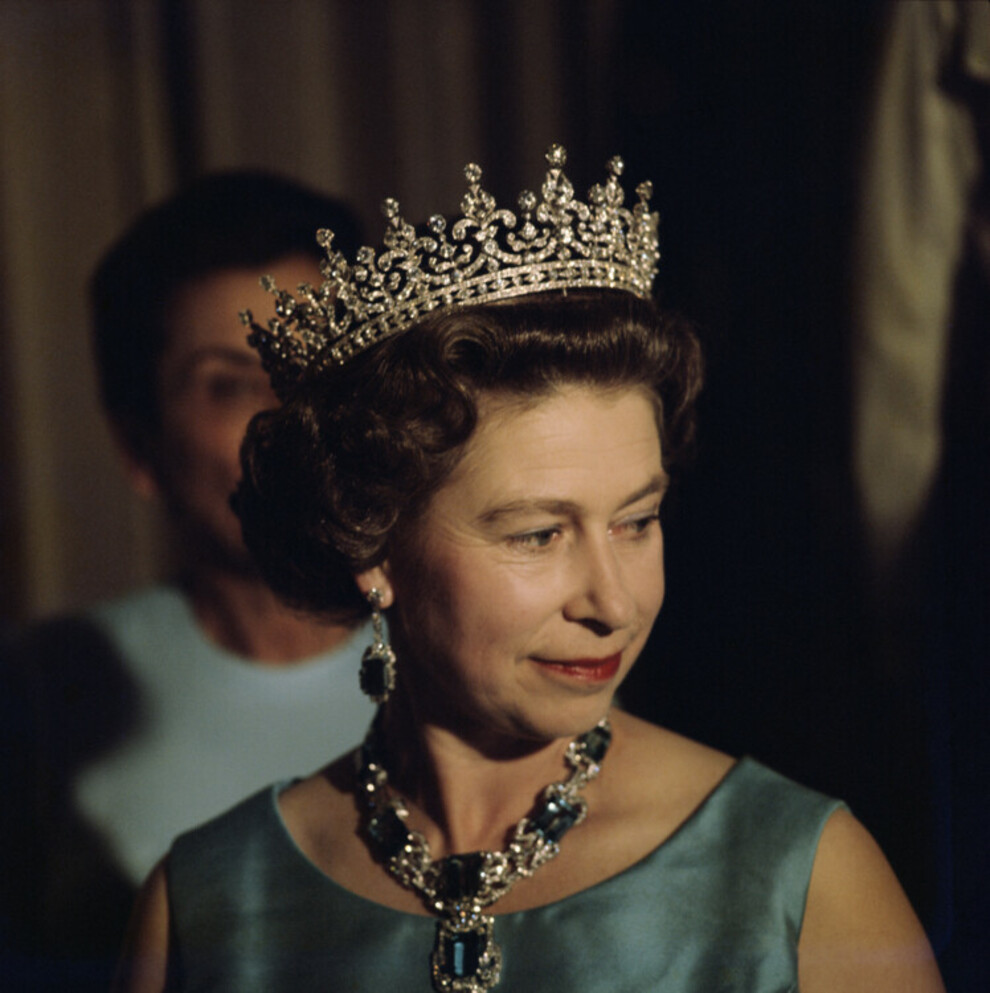
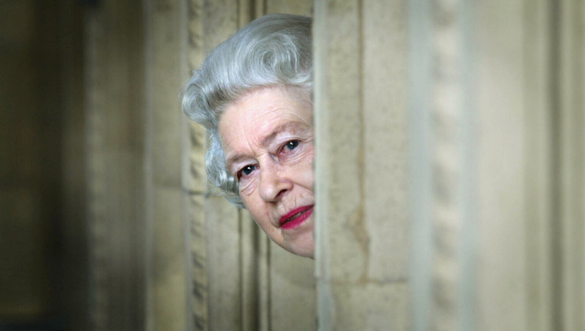
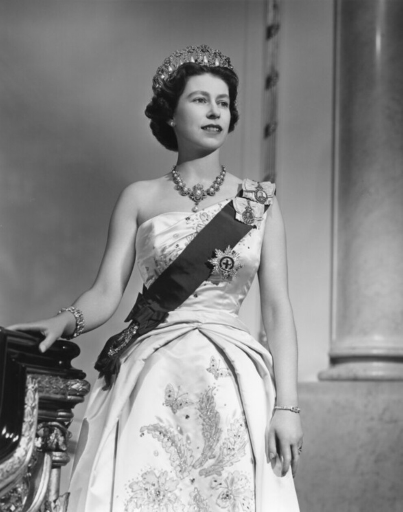

Королева Великої Британії Єлизавета II померла у віці 96 років. Вона
стала монархом, що найдовше в історії керував Великою Британією,
обіймаючи посаду королеви з 1952 року.

Букінгемський палац оголосив у четвер вранці, 8 вересня, що королеву взяли
під медичний нагляд на тлі занепокоєння. Вона перебувала в Балморалі.
Через погіршення стану здоров’я Єлизавети II, члени королівської сім’ї,
зокрема четверо її дітей, принц Чарльз, принцеса Анна, принц
Ендрю та принц Едвард, а також її онук принц Вільям, перебували з нею в замку.
Ввечері 8 вересня королівська родина підтвердила смерть Єлизавети II в
короткій заяві: «Королева мирно померла в Балморалі сьогодні вдень. Король і
королева залишаться в Балморалі цього вечора й повернуться до Лондона
завтра»

Тепер, коли королева померла, її старший син і спадкоємець, принц Чарльз
посяде на троні, а герцогиня Камілла стане королевою-консортом,
як передбачено британським порядком успадкування королівського престолу.
У віці 73 років Чарльз стане найстарішим членом королівської сім’ї, який коли-небудь
займав трон.
Королева була головою (і найпопулярнішим членом) британської королівської
родини, і її смерть — велика втрата не лише для рідних, а й для всієї Великої
Британії.

А тепер цікаві факти про королеву Великої Британії та Співдружності.
під медичний нагляд на тлі занепокоєння. Вона перебувала в Балморалі.
Через погіршення стану здоров’я Єлизавети II, члени королівської сім’ї,
зокрема четверо її дітей, принц Чарльз, принцеса Анна, принц
Ендрю та принц Едвард, а також її онук принц Вільям, перебували з нею в замку.
короткій заяві: «Королева мирно померла в Балморалі сьогодні вдень. Король і
королева залишаться в Балморалі цього вечора й повернуться до Лондона
завтра»
посяде на троні, а герцогиня Камілла стане королевою-консортом,
як передбачено британським порядком успадкування королівського престолу.
У віці 73 років Чарльз стане найстарішим членом королівської сім’ї, який коли-небудь
займав трон.
родини, і її смерть — велика втрата не лише для рідних, а й для всієї Великої
Британії.
Прізвиська королеви.
- Прізвисько «Лілібет» Єлизавета отримала коли була ще зовсім малою та не могла правильно
вимовити своє ім'я. Король Георг VI говорив про своїх дочок: «Лілібет — моя гордість. Маргарет
— моя радість».- А принц Філіп з любов'ю називав свою дружину «капустинкою».
Служба під час Другої світової війни.
- Коли розпочалася Друга світова тоді ще принцесі було лише 13. У 1945 році
Єлизавета вмовила батька дозволити їй зробити свій безпосередній внесок у
перемогу. Вона приєдналася до Жіночої Допоміжної Територіальної Служби, де
вивчилася на водійку та була відома як № 230873 лейтенант Елізабет Віндзор.
Це стало першим випадком в історії королівської родини, коли жінка служила у
військовому підрозділі.
Кохання з дитинства.
- Вона познайомилася з принцом Філіпом, коли їй було 8 років. Незважаючи на
те, що вони були маленькими дітьми, вони відвідували багато тих самих заходів,
королева Єлизавета II і принц Філіп офіційно зустрілися в 1934 році на весіллі
принцеси Греції Марини та принца Джорджа, герцога Кентського.
Вона організувала перший в історії захід лише для жінок у Букінгемському палаці.
У 2004 році королева організувала ланч «Жінки досягнення» в Букінгемському
палаці. Ця подія стала першою в історії церемонією для жінок, яка відбулася в
палаці. Жінки з бізнесу, політики, моди та мистецтва були запрошені на обід до Її
Величності.
Серед гостей були
палаці. Ця подія стала першою в історії церемонією для жінок, яка відбулася в
палаці. Жінки з бізнесу, політики, моди та мистецтва були запрошені на обід до Її
Величності.
- Дж. К. Роулінг
- Шарлотта Черч
- Твіггі
- Марджорі Воллес
- Кейт Мосс